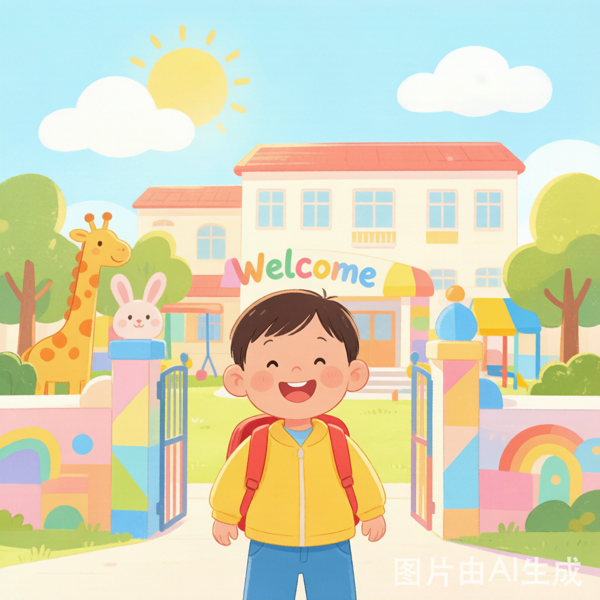

瓯海区机关幼儿园会昌园区 · 小班新生
2026年6月12日 · 录取纪念日
亲爱的爸爸妈妈们，首先要恭喜你们——宝宝收到了幼儿园的录取通知书，即将迈出人生中第一个独立的脚步！🎊
对于三岁的小宝贝来说，从家里走向幼儿园是一个巨大的转变。他们会兴奋、会紧张、会哭闹，这全部都是最正常不过的事情。作为家长，我们能做的就是用心的准备和温柔的陪伴。
这份攻略涵盖了物品准备、能力培养、心理建设、分离焦虑应对、家长配合五大维度，希望能帮你从容地陪宝宝走好这第一步。
这些能力不用追求完美！入园后老师在集体环境中会持续引导。关键是提前一个月左右开始有意识地练习，让宝宝有心理准备和能力基础就行。
幼儿园应该是宝宝期待的地方，不是惩罚的场所。
分离焦虑不是宝宝"不乖"，而是大脑发育的正常表现。2-4岁的孩子离开熟悉的家人和环境产生焦虑，是完全健康的反应。一般来说，入园第2-4天是哭闹高峰期，之后会逐渐好转。
每天上午入园2小时，只参与游戏活动。家长在园外等候，中午接回家。
在幼儿园待到午饭后，体验吃点心、集体游戏。吃完午饭接回家，暂不午睡。
尝试在园午睡，下午接回。逐步适应完整作息。如宝宝特别抗拒，可再放慢节奏。
建立稳定的入园节奏。此时大多数宝宝已基本适应，能主动参与活动、和小朋友互动。
研究显示：经过科学梯度适应后，86%的孩子能在2个月内主动完成分离流程，夜间惊醒次数减少62%。
你知道吗？家长的焦虑会"传染"给宝宝。研究数据表明：情绪稳定的家长，其孩子的分离焦虑持续时间平均缩短40%。所以，你自己的心态调整同样重要！
| 时间节点 | 事项 |
|---|---|
| 6月中 | 收到录取通知，确认入园，加入家长群 |
| 6月-7月 | 完成入园体检、材料准备、疫苗接种确认 |
| 7月-8月 | 开始作息调整、自理能力训练、心理预热 |
| 8月中 | 物品采购（衣物、寝具、姓名贴等全部就位） |
| 8月下旬 | 参加家长会/开放日，带宝宝熟悉园区环境 |
| 9月1日 | 🎉 正式入园！愉快告别，准时接园 |